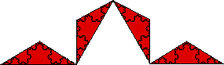

| Now replace repalce this single triangle with four smaller triangles. |
| For each small triangle the base has been shrunk by 1/3 and the altitude by 1/3, so the area of each is 1/9 that of the original triangle. |
| Thus the sum of the areas of these four triangles is |
| A1 = ((√3)/12)⋅(4/9). |
|  |
Here is the third approximation.
Return to Ineffective Ways to Measure.